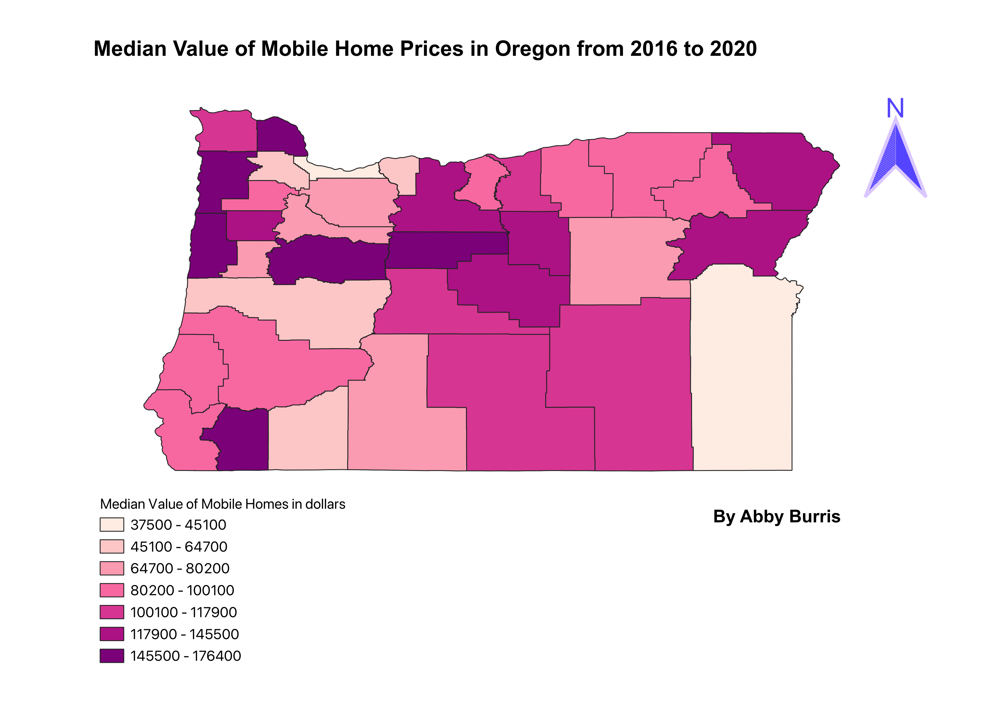

The data on the map portrays the median value of mobile homes in each county in Oregon. The data is an average for the years 2016 to 2020. The data is classified using Natural Breaks.
I randomly chose Oregon. I chose to look at mobile home prices because I find mobile home markets very interesting. They are a way for people to be able to cheaply afford their own place; however, it can be an issue because they don't actually own the land that their home is on. Also its interesting to see how the price of mobile homes over the past couple decades has been increasing at a high rate.
